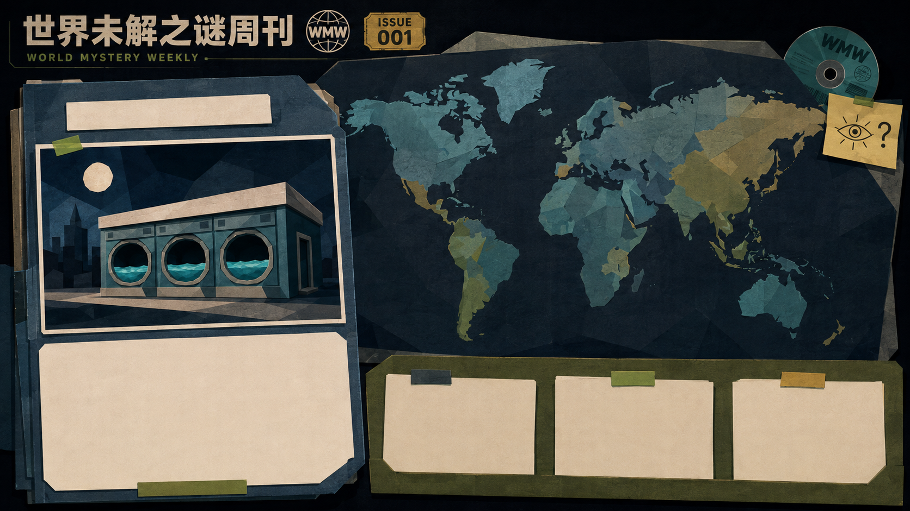
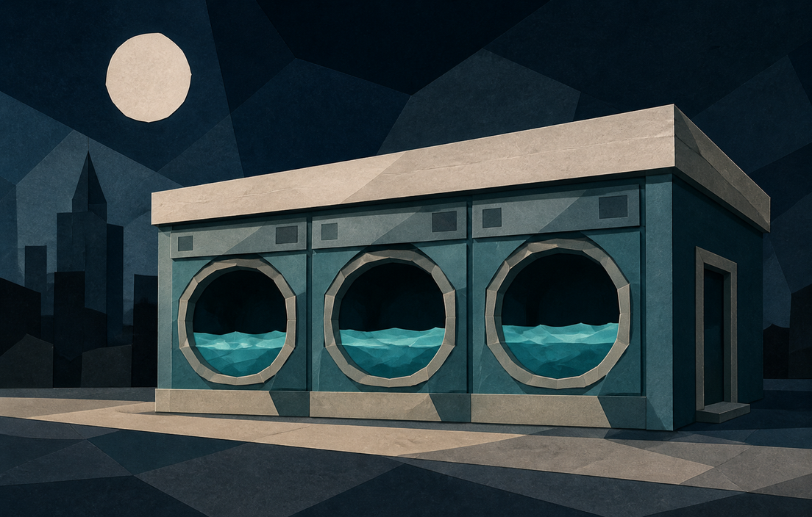

NIGHT DESK / 夜班编辑台
第 1 天
选题会尚未开始
PHOTO DESK / 当前来稿 01
北美禁区带

红线升温
洗衣店里
出现了一片海
这里是独立样片的地区任务台入口，尚未连接正式游戏。
你可以返回选题桌，继续查看其他来稿。
任务情报 · 4
查看已知任务 ＋
进入地区 →
可进入调查
01
北美禁区带
当前来稿
02
东亚神秘地带
锁定 · 可预览
03
南太平洋失航区域
锁定 · 可预览
01
可进入
北美禁区带
洗衣店里出现了一片海
红线升温
02
可预览
东亚神秘地带
天文台在凌晨向北移动
尚未解锁
03
可预览
南太平洋失航区域
深海电波正在重复呼号
尚未解锁
01 / 北美来稿正在左侧工作夹中展开
独立美术交互样片
1–3 切换 · E 展开 · Esc 返回